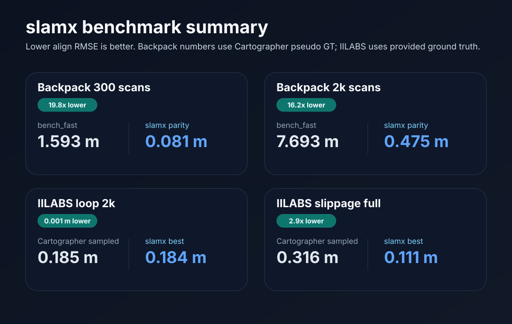
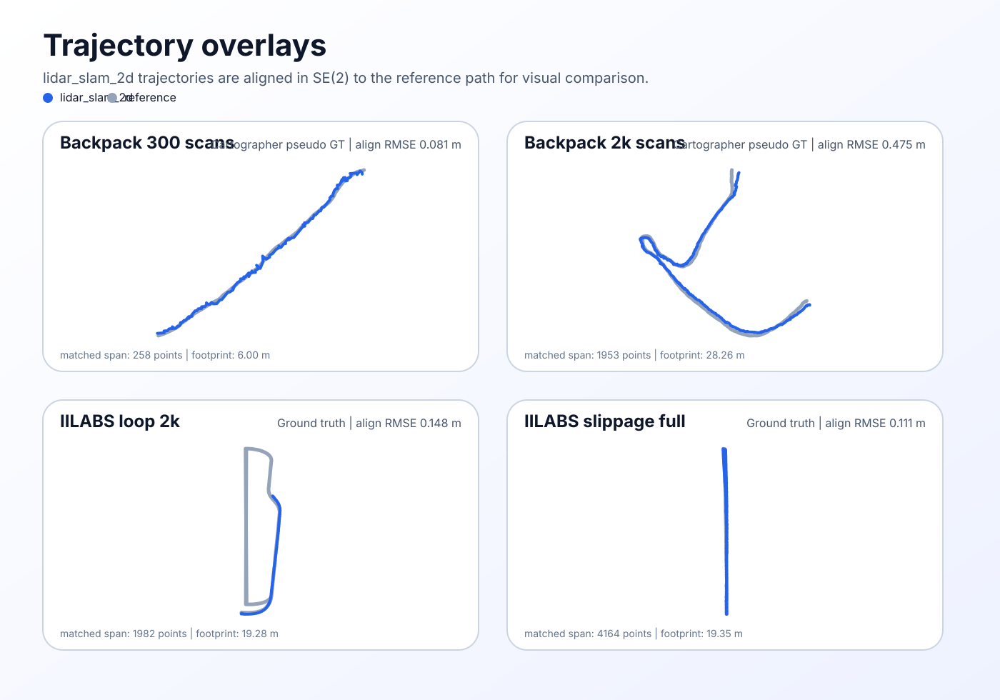

Backpack parity
Early Cartographer backpack_2d segments moved from meter-scale drift to sub-meter agreement against Cartographer pseudo GT by switching to Cartographer-style local matching and simpler pose graph handling.
lidar_slam_2d
lidar_slam_2d is a ROS-free core for offline SLAM replay, evaluation, and scan-matcher iteration. The current public slice focuses on a clean split between Cartographer parity work, GT-backed IILABS comparisons, and a small set of visuals that are easy to reuse in the repository README.
This site is intentionally small: one benchmark summary, one trajectory gallery, and the core commands needed to reproduce the workflow locally. The underlying repo still contains active experimental branches, but the public-facing surface stays focused on the clean story.
Early Cartographer backpack_2d segments moved from meter-scale drift to sub-meter agreement against Cartographer pseudo GT by switching to Cartographer-style local matching and simpler pose graph handling.
Continuous-GT wins already hold on slippage, nav_a_omni,
nav_a_diff, and ramp, with matched-prefix wins on
segmented-GT loop and elevator.
All visuals are generated as SVG assets so the same files work on GitHub Pages and inside the repository README.
The summary below compares a reference trajectory against the current best lidar_slam_2d result on each highlighted slice. Lower align RMSE is better.

These overlays align the slamx trajectory to the reference path for visual comparison. Backpack panels use Cartographer pseudo GT; IILABS panels use the provided ground truth.

pip install -e .
slamx replay examples/fixture_scans.jsonl --out runs/demo --no-write-map
slamx eval ate runs/demo --gt runs/cartographer_traj_s300_window.csvThe public story is already strong enough to publish: backpack parity is substantially improved, and GT-backed IILABS slices are already ahead of sampled Cartographer on several datasets. The active technical thread is now long-run drift and loop closure on full-bag IILABS runs, not whether backpack parity should be described as a win.